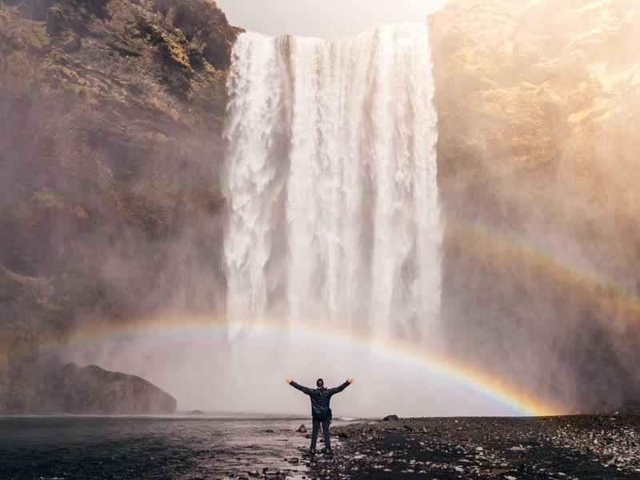
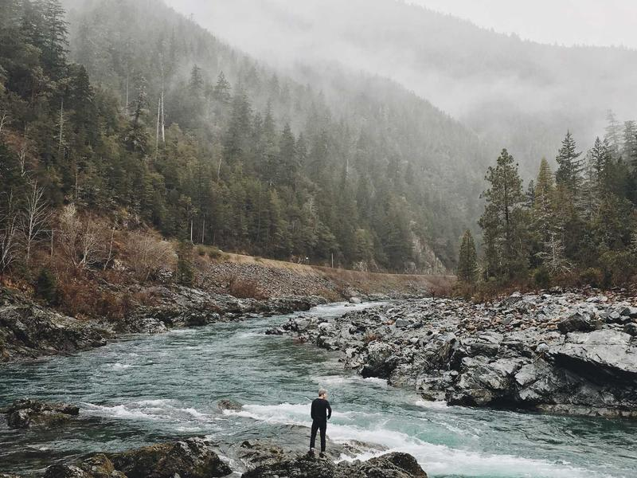
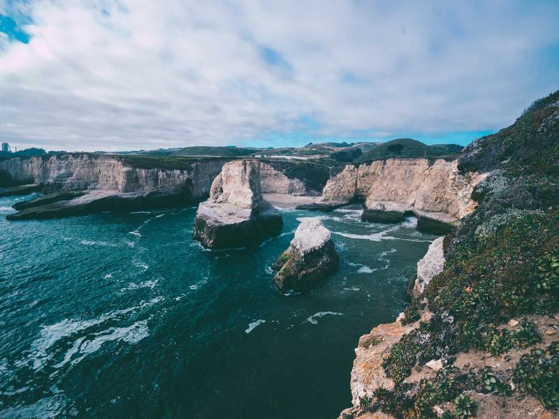
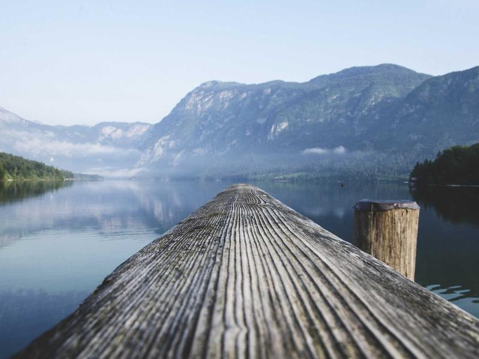

Waters
Waterfalls, rivers, and still lakes: places where you can hear nature before you see it.






Wild places worth the trip
Waterfalls, rivers, and still lakes: places where you can hear nature before you see it.



